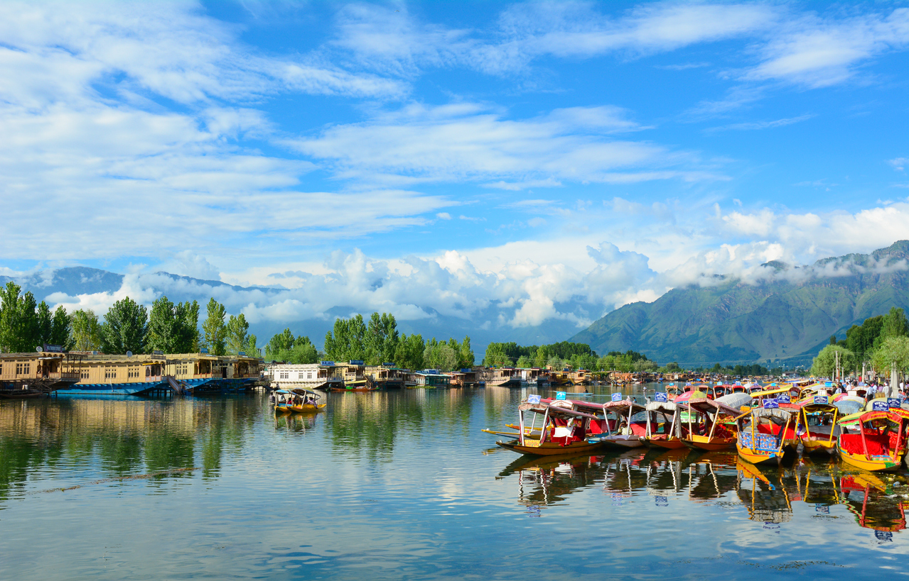

Asia > India > Jammu and Kashmir > Kashmir > Srinagar District > Srinagar
ABOUT SRINAGAR
Srinigar is a modern waterworld, dominated by Dal Lake and
its twisting waterways, tree-lined Nagin Lake, and the Jhelum
River. Engulf yourself in local culture by embracing your
sea legs and renting one of the wooden boats called shikaras
for a daytime or twilight cruise. On land, stroll through
the terraced hillsides of the 400-year-old Mughal Gardens,
created by Emperor Jehangir for his wife, and shop for
indigenous crafts like hand-woven silks and embroidered shawls.
ESSENTIALS SRINAGAR
~ DO ~
places to see , ways to wander and
signature experience
~ STAY ~
a mixture of the charming , modern and
tried and true
~ EAT ~
can't miss spots to dine , drink
and feast